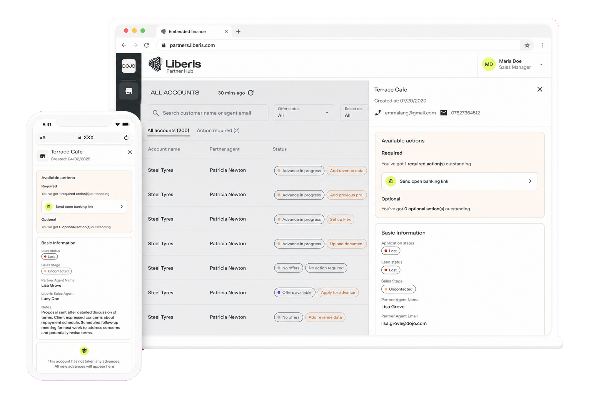
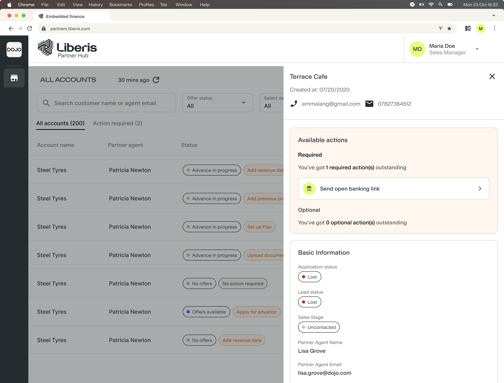
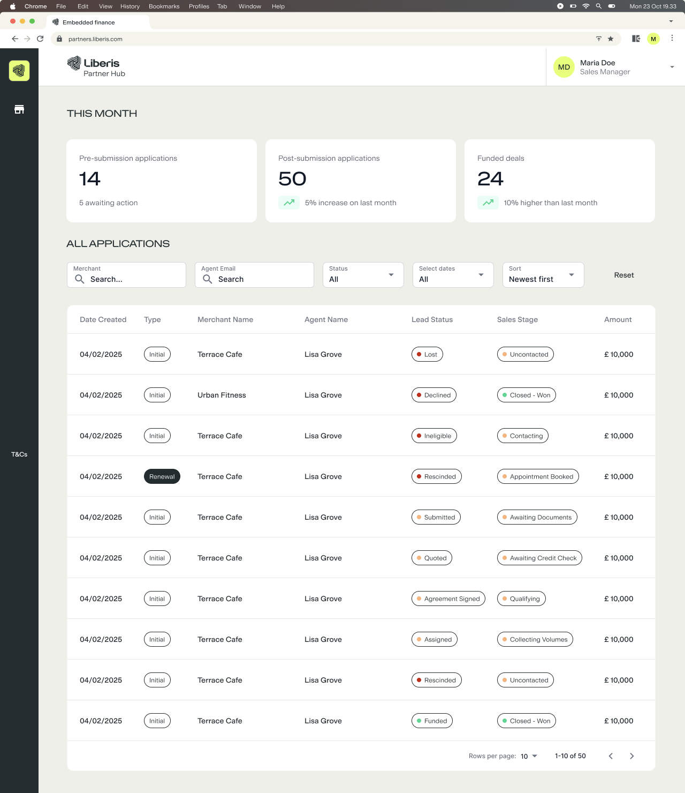
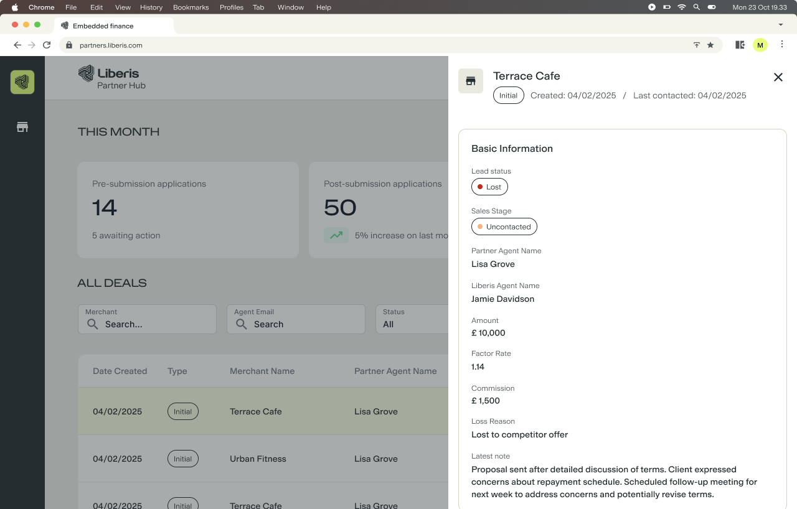
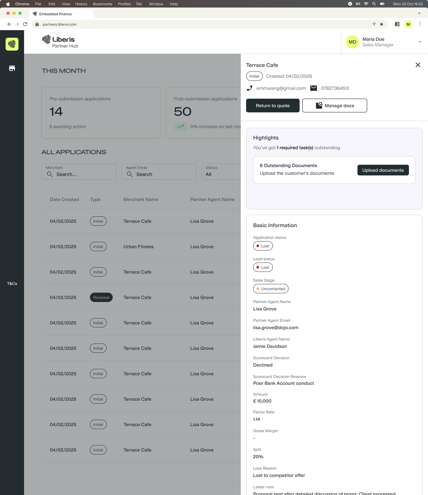
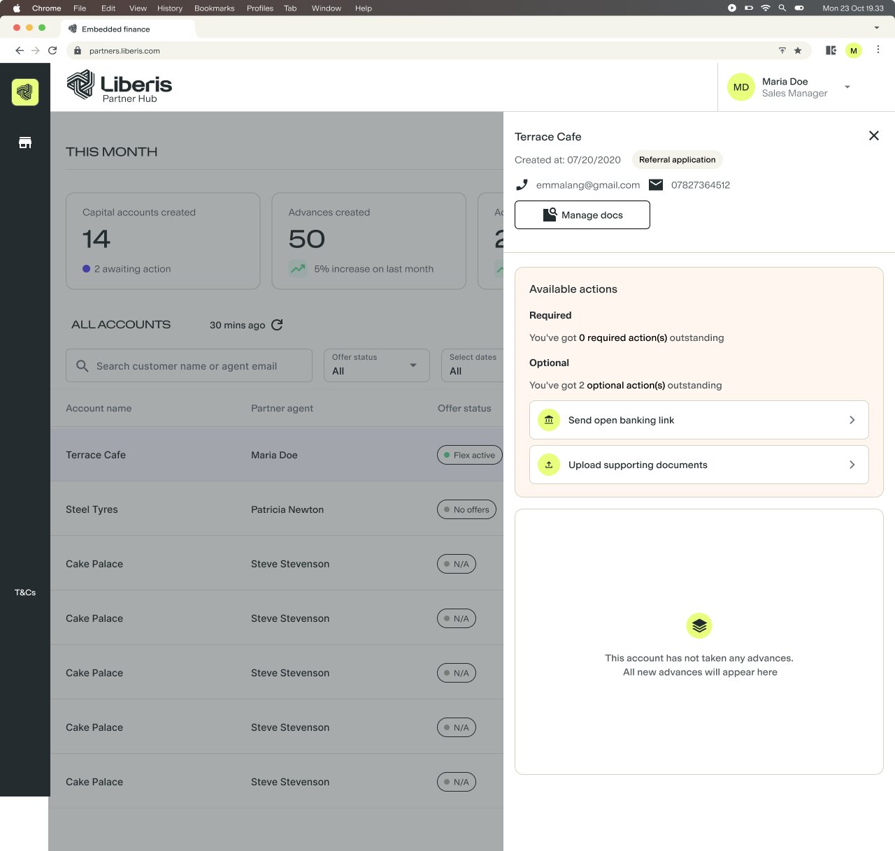
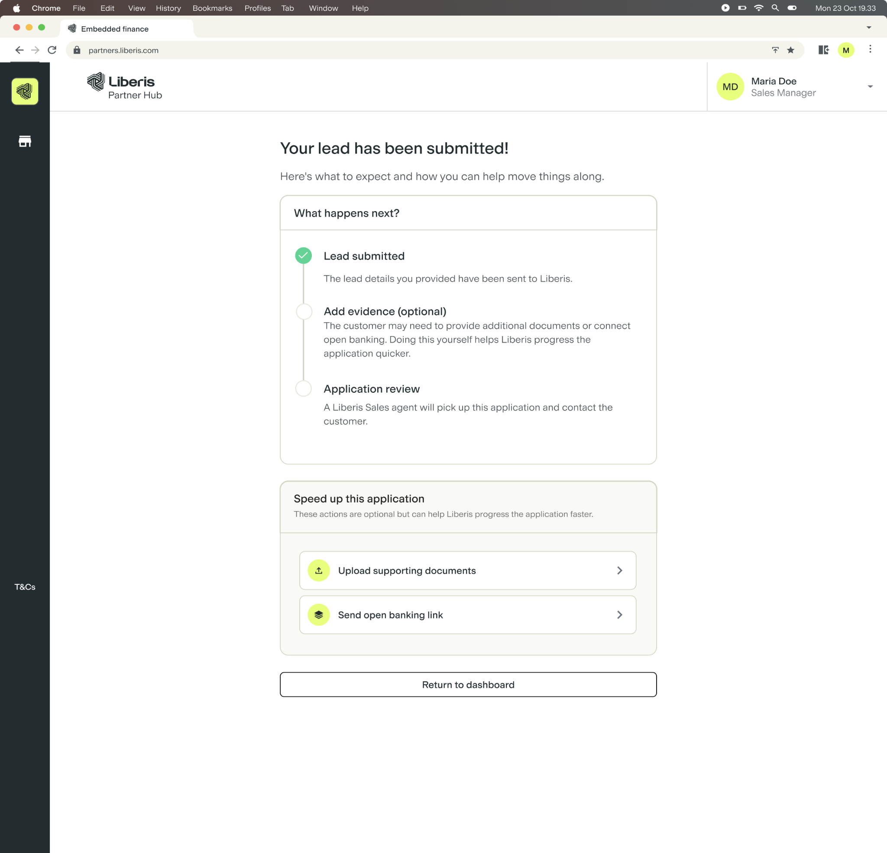
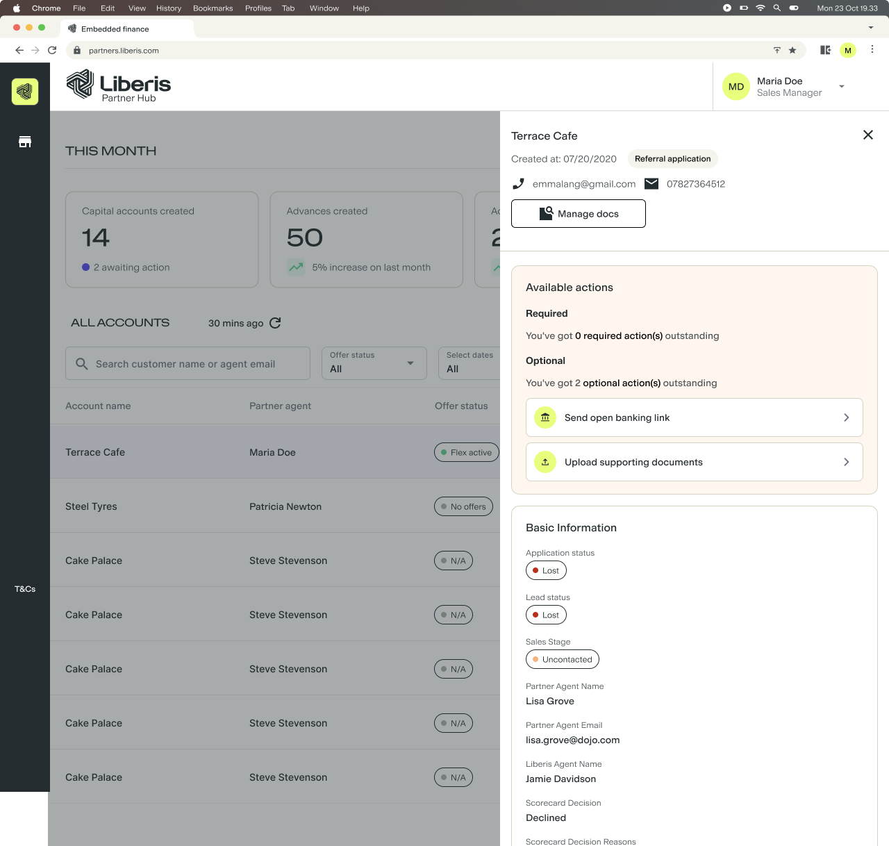
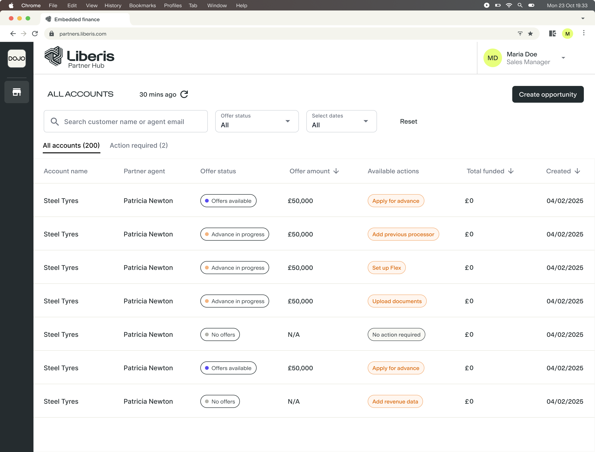
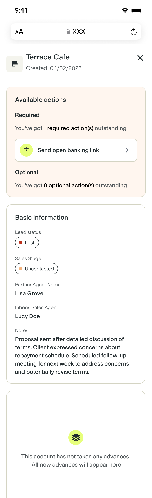

Partner agents could see application data, but often could not tell what had happened, who needed to act or how to move forward. I led the service mapping and interface design across the dashboard, account panel and recovery journeys. Shipped across multiple releases, the work created one shared model for status, ownership and next actions.
Role
Product Designer
Team
PMEngineersPartner ManagersPartner Sales Agents
Scope
Service blueprinting, journey mapping, workflow design, UX/UI and delivery
Timeline
2025–2026 · Shipped across multiple releases

The problem
Agents could see that a funding application had paused without knowing why, who needed to act or how to recover it. Separate feature requests pointed to a shared problem: the platform displayed information without consistently explaining the next step.
The decision that connected the experience
I mapped the handoffs between agent, merchant, Liberis and the system. The resulting model made an action Required or Optional according to the current application state and owner, rather than giving the action a fixed priority.
That rule connected the dashboard, account panel and recovery route. It also allowed the interface to explain when waiting for someone else was the correct next step.

Priority follows the current state of the application, with the account context kept visible.A DECISION I INFLUENCED
Keeping status visible when no action is needed
The Product Manager initially wanted the action panel to appear only when something needed doing. I advocated for a persistent panel so agents could return to the same place for a quick status check, including confirmation that no action was needed. Separating Required from Optional actions also kept supporting tasks from looking like blockers.
A shared way to understand and progress applications
Enabled recovery. Across multiple releases, agents gained direct routes from an application’s status to adding missing information or supporting evidence.
Changed the product decision. I advocated for a persistent action panel, giving agents a consistent place to check what needed doing—including confirmation that no action was needed.
Connected the platform. The dashboard, account panel and recovery routes share one model of status, ownership and priority. Required and Optional actions distinguish blockers from supporting tasks.
The shipped capability is demonstrated here; recovery-rate and funding-completion improvements have not been quantified.
What I learned
“Highlights” sounded passive; “Action required” made every task seem mandatory. Mapping the state, owner and blocker gave me a more accurate hierarchy than changing labels alone.
A multi-release case study about moving Partner Hub from displaying application information to helping partner agents understand and progress the work.
Overview
Partner Hub helps partner agents manage merchants seeking funding. As Cash Advance and Flex Advance grew, applications could pause while a merchant completed Open Banking, Liberis reviewed evidence or missing information was supplied.
The dashboard and account panel showed status, but did not always explain who needed to act or how to continue. Several feature requests revealed one shared need: a consistent model for status, blockers, ownership and next actions.
How might we help partner agents understand what is happening, who needs to act and how to continue an application when the journey pauses?
I led the service mapping, progress model and responsive interface design across multiple releases, working with engineers through delivery.
Reviewing the existing dashboard and account panel
I began by reviewing how application progress appeared across the two main surfaces agents used. The dashboard showed which merchant accounts existed and their current status. Opening an account revealed more detail, but the panel remained largely passive. Agents could see what Partner Hub knew without consistently understanding why progress had stopped or what they could do next.
The challenge wasn't simply displaying application status. It was helping agents understand how to move the merchant forward.

The earlier Cash Advance dashboard surfaced status but offered limited guidance.

The original panel brought information together without a clear next step.
Understanding where journeys could pause
Next, I mapped what happened when an application did not move straight through to completion. It might be waiting for the merchant to connect Open Banking, missing revenue or processor information, or sitting with Liberis while evidence was reviewed. These moments caused the most confusion because an agent could return later without knowing what had happened or whether they needed to do anything.
I used a service blueprint because the screens alone could not show all of the handovers behind each status. It placed the agent's actions alongside the merchant's task, Liberis's internal work and the system update that followed. For each paused state, I documented what caused it, what information Partner Hub held, who was responsible for resolving it and what the agent needed to see when they returned. This gave me the rules needed to design clearer statuses and next actions.
Partner agentAdds the business and ownership details needed to create the accountAdds revenue information or asks the merchant to connect Open BankingGenerates a quote and discusses the available funding with the merchantChecks the application details, evidence and selected funding optionSubmits the completed application
MerchantProvides business and owner informationShares revenue information or completes Open BankingReviews the amount, cost and payment terms with the agentConfirms the information and provides anything still missingAgrees to proceed with the application
Line of interaction
Partner Hub FrontstageCreates the merchant account and saves the first completed stageShows the available assessment routes and records revenue dataDisplays the merchant's quote and the information used to create itBrings the application details, blockers and next actions togetherConfirms submission and shows what happens next
Line of visibility
Liberis teams BackstageDefine the business and ownership information requiredSet the evidence and eligibility rules used during assessmentSupport the pricing and eligibility rules behind the quoteReview evidence or request missing information where requiredReceive the application for the next stage of processing
Systems and dataCreate the account and store the merchant recordReceive Open Banking, processor or self-declared revenue dataCalculate the available quote from the assessment dataValidate required fields and preserve the current application stateUpdate the application status across the dashboard and side panel
This service blueprint follows the actual application journey from account creation to submission. The application could pause after the account was created or between any later stages, so I used the blueprint to show what had been completed, who owned the next action and what Partner Hub should display when the agent returned.
The key distinction was between being the person viewing the application and being the person responsible for moving it forward. Sometimes the agent needed a clear action. At other times, Partner Hub needed to reassure them that progress was happening elsewhere and that waiting was the correct next step.
Evolving the account panel from status to action
Knowing that an application was missing revenue data did not tell the agent how to resolve it. I explored four iterations of the same account-panel pattern, each responding to a limitation in the previous approach.
The first surfaced useful information but offered no next step. The second used Highlights to make issues easier to notice, but the label still felt passive. Action Required made urgency clearer, although it treated every suggested action as equally necessary. The final model separated Required actions that blocked progress from Optional actions that could strengthen or accelerate the application.
01Application informationUseful detail, but no label or clear next step
02“Highlights” labelThe label was too passive to signal that action was needed
03“Action required” labelThe label communicated urgency, but treated every action as necessary
04“Required” + “Optional” labelsThe labels made each action's priority clear

Highlights improved visibility but sounded informational.

The final hierarchy distinguished blockers from supporting actions.A DECISION I INFLUENCED
Keeping status visible when no action is needed
The Product Manager initially wanted the action panel to appear only when something needed doing. I advocated for a persistent panel so agents could return to the same place for a quick status check, including confirmation that no action was needed. Separating Required from Optional actions also kept supporting tasks from looking like blockers.
Connecting priority to the current application state
The Required and Optional hierarchy could not be a fixed list of tasks. The same action could block progress at one point, provide additional support at another or disappear once responsibility moved to the merchant or Liberis.
I defined how the dashboard and account panel should respond as an application changed. When revenue information was missing, the agent saw a required action to add it. Once an Open Banking link had been sent and the merchant needed to respond, the required-action count returned to zero. If the assessment later needed information about another payment processor, a new required action appeared.
Open Banking made the rule especially clear. It was required when verified revenue was needed to calculate a Flex Advance limit, but optional after a referral had already been submitted and could progress without it.
BEFORE CALCULATING A FLEX ADVANCE LIMIT
Open Banking
Required
Verified revenue data is needed to calculate the merchant's available limit, so the journey cannot progress without it.
AFTER SUBMITTING A REFERRAL
Open Banking
Optional
The referral has already been submitted. Connecting Open Banking may support the review, but it does not block the application from progressing.
The action itself didn't determine its priority. Its role in the current journey did.
Applying the rule after a referral
I applied the same distinction to a referral journey, where the agent had already sent the merchant's details to Liberis for review. Supporting documents and Open Banking could strengthen that review, but neither was required for the referral to remain active or continue progressing. Presenting them as mandatory would have incorrectly suggested that the application was stuck.
The confirmation page introduced both actions only after submission, and the account panel preserved their Optional status when the agent returned. This kept the message consistent across the two surfaces.

The lead is submitted before optional evidence is introduced.

The same priority remains visible when the agent returns.
Bringing the final experience together
The final dashboard made accounts requiring attention visible alongside their current status and next action. Opening an account then gave the agent the context behind that action and separated work that blocked progress from additional support that remained optional. The same hierarchy carried across desktop and mobile so the meaning did not change with the screen size.

The final dashboard helps agents identify which merchant accounts need attention and what action is available.
The desktop side panel explains the outstanding work while keeping the wider account context visible.

The same action hierarchy carries through to the responsive mobile experience.
A shared way to understand and progress applications
Across multiple releases, Partner Hub evolved from displaying application information to providing routes for agents to act on it. The dashboard surfaces accounts needing attention; the account panel explains the outstanding work; recovery actions connect agents to missing information and evidence tasks.
My advocacy changed the proposed behaviour of the action panel. Keeping it visible gives agents a consistent place to check application status, even when nothing needs doing. Separating Required and Optional actions also avoids presenting every supporting task as a blocker.
The resulting model connects status, ownership, priority and next actions across the experience. It provides a foundation that future workflows can reuse as the platform grows.
These releases establish the workflow capability. A measured change in application recovery or funding completion is not available in this case study.
What I learned
A status is only useful when it helps someone understand what has happened, whether progress is blocked, who needs to act and what should happen next. An action is not inherently Required or Optional either. Its priority depends on the current application state.
The biggest shift was recognising that I was not designing an isolated dashboard or side panel. I was designing how work moved between the agent, merchant, Partner Hub and Liberis, then deciding what each interface needed to communicate at that moment.
With more time, I would apply the same approach to the remaining stages of the Flex Advance application journey so agents receive consistent status, ownership and next-action guidance throughout Partner Hub.